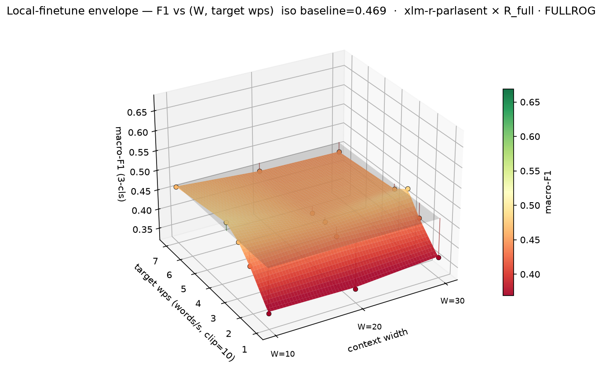

| key | sources | meaning |
|---|---|---|
S | parlasent_sl | parliament text, published 6-cls labels |
P | parlaspeech_si | parliament speech transcripts, XLM-R-ParlaSent self-labels (⚠ self-labelled on parlasent backbone) |
R | rog_dia (≥2 s) | ROG dialogue, 2 s-filtered train split |
SP, SR, PR, SPR | unions of the above | pairwise + triple on 2 s-filtered ROG |
R_full | rog_dia_full | ROG dialogue train, no 2 s filter (~10 k rows) |
SR_full, PR_full, SPR_full | unions with full-ROG | same mixing, full-ROG train swapped in for R |
Backbones: xlm-roberta-large (= FacebookAI/xlm-roberta-large, baseline, no sentiment pretrain) ·
xlm-r-parla (= classla/xlm-r-parla, parliamentary MLM continue-pretrain, no sentiment head) ·
xlm-r-parlasent (= classla/xlm-r-parlasent, parla + ParlaSent sentiment regression head).
See references [1, 3].
First matrix, trained on the ≥2 s filtered ROG split (n=434 test). Headline: parliament→dialogue transfer is broken on this slice; SPR is the only mixture that holds positive R² on dialogue. Full-ROG rerun below drops the 2 s filter and tells essentially the same story at a −0.008 F1_3 delta from the 2 s twin.
| backbone | mixture | 3-cls F1 | 6-cls F1 | R² | note |
|---|---|---|---|---|---|
| XLM-R-large | R-only | 0.271 | 0.125 | −0.030 | collapse → neutral |
| XLM-R-parla | R-only | 0.271 | 0.125 | −0.028 | collapse → neutral |
| XLM-R-parlasent | R-only | 0.572 | 0.286 | +0.200 | head rescues |
| XLM-R-large | SPR | 0.566 | 0.274 | +0.202 | clean |
| XLM-R-parla | SPR | 0.554 | 0.298 | +0.172 | 6-cls peak (clean) |
| XLM-R-parlasent | SPR | 0.549 | 0.268 | +0.216 | ⚠ self-labelled on P |
| random (uniform) | baseline | 0.260 | 0.118 | −2.371 | natural prior |
| majority-class (neutralPositive) | baseline | 0.271 | 0.125 | −0.024 | 72% neutral on ROG |
| ParlaSent 0shot (stock, no fine-tune) | baseline | 0.457 | 0.209 | −0.728 | stock parliament head |
| IAA ceiling (annotator ↔ curator) | ceiling | 0.699 | 0.625 | +0.511 | human noise floor |
Baselines + ceiling on ROG test n=434 (2 s filter). Majority-class matches R-only F1 — the plain-backbone collapse is literally the majority baseline.
ParlaSent 0shot beats majority by +0.19 F1_3 but has R² = −0.73 because its scale is calibrated for parliament, not ROG's neutral-heavy distribution.
SPR beats ParlaSent 0shot by +0.09 F1_3 and gets R² positive. IAA ceiling: annotator vs curator agreement — ~77 % row agreement; F1_3 ≈ 0.70 is the realistic upper bound.
Matrix: misc/run_results/finetune_20261113_162724/ · baselines: runs/baselines/baselines_rog_test_2s.md.
Two experiments on the same full-ROG test set (n=2233), same day. First: mixing + collapse story at iso — tells us which backbone × mixture survives when sub-2 s rows are back in. Second: context-window sweep at W ∈ {10, 20, 30} on R_full — the local analogue of the OR Flash context sweep in Report 2. Primary cell is xlm-r-parlasent × R_full: it's the best ROG scorer (F1_3 = 0.469) and the only backbone that doesn't collapse to always-neutral when trained on dialogue alone.
Nine cells: S / R_full / SR_full × 3 backbones, all iso.
| backbone | mixture | ROG-full F1_3 | ParlaSent-SL F1_3 | note |
|---|---|---|---|---|
| XLM-R-parlasent | R_full | 0.469 | 0.513 | best ROG; parlasent head holds up |
| XLM-R-parlasent | SR_full | 0.417 | 0.672 | best ParlaSent retention |
| XLM-R-parlasent | S | 0.409 | 0.626 | parliament-only (home) |
| XLM-R-parla | SR_full | 0.373 | 0.588 | S rescues collapse |
| XLM-R-parla | S | 0.334 | 0.626 | parliament-only (home) |
| XLM-R-parla | R_full | 0.276 | 0.235 | collapsed → neutral |
| XLM-R-large | SR_full | 0.332 | 0.530 | S rescues collapse |
| XLM-R-large | S | 0.402 | 0.605 | parliament-only (home) |
| XLM-R-large | R_full | 0.276 | 0.235 | collapsed → neutral |
Full ROG test n=2233 (natural ~72 % neutral); ParlaSent-SL test n=366. Grouped by backbone (parlasent → parla → large).
Run: runs/finetune_20261118_132942/.
R_full solo kills non-sentiment backbones. XLM-R-large and XLM-R-parla trained on ROG alone collapse to always-neutral (F1_3 = 0.276 = majority baseline; recall_neu = 1.0, recall_pos = recall_neg = 0). ROG's 72 % neutral prior drowns the signal when the backbone has no pre-existing sentiment calibration.
Parlasent head is the only solo-ROG survivor. XLM-R-parlasent × R_full = 0.469 on ROG-full — the best ROG score of any cell. Its calibrated sentiment distribution protects against the collapse.
Adding S rescues the collapse but at ROG cost. SR_full lifts XLM-R-large to F1_3 = 0.332 and XLM-R-parla to 0.373. ParlaSent-SL F1_3 gets much stronger across the board (SR_full on parlasent is 0.672 — best ParlaSent retention). Full ROG training regularizes the parliament side of the model more than it lifts the ROG side.
3 backbones × 3 context widths (W ∈ {10, 20, 30}) × R_full training, rog-full test.
| backbone | W | ROG-full F1_3 | ROG-full F1_6 | ROG-full ρ | pos recall | note |
|---|---|---|---|---|---|---|
| XLM-R-large | iso (ref) | 0.276 | 0.126 | — | 0.00 | majority-collapse |
| XLM-R-large | W=10 | 0.347 | 0.177 | 0.206 | 0.061 | sliver-rescue |
| XLM-R-large | W=20 | 0.290 | 0.115 | 0.165 | 0.015 | re-collapsing |
| XLM-R-large | W=30 | 0.276 | 0.138 | 0.136 | 0.000 | full collapse |
| XLM-R-parla | iso (ref) | 0.276 | 0.126 | — | 0.00 | majority-collapse |
| XLM-R-parla | W=10 | 0.368 | 0.175 | 0.202 | 0.108 | sliver-rescue (best of the three) |
| XLM-R-parla | W=20 | 0.346 | 0.166 | 0.216 | 0.064 | fading |
| XLM-R-parla | W=30 | 0.320 | 0.128 | 0.193 | 0.012 | re-collapsing |
| XLM-R-parlasent | iso (ref) | 0.469 | 0.238 | — | 0.15 | best overall cell |
| XLM-R-parlasent | W=10 | 0.453 | 0.238 | 0.238 | 0.274 | flat vs iso |
| XLM-R-parlasent | W=20 | 0.438 | 0.214 | 0.214 | 0.312 | flat vs iso |
| XLM-R-parlasent | W=30 | 0.445 | 0.218 | 0.236 | 0.385 | flat vs iso; best pos recall |
| (reference) OR Flash iso FULLROG | — | 0.546 | 0.281 | 0.353 | — | Report 2 |
Mixture = R_full (ROG only, no S/P, no self-labels), train n=10,544. Eval: rog_dia_full (n=2233, natural distribution ~72 % neutral).
iso rows carried from the mixing matrix above; W rows from the context matrix.
Runs: runs/from_remote/Full_ROG_dia-v2_XLM_test/finetune_20261118_160746/ (ctx) · runs/finetune_20261118_132942/ (iso).
Context prep: scripts/1_data_prep/prep_rog_context.py. Train: scripts/4_finetune_text/run_matrix.py --mixtures R_full_ctxw{10,20,30}.
Context HURTS local fine-tune — opposite of Flash. On every backbone, the W=10 cell is the best context cell (if any), and the surface decays from there. XLM-R-large: W=10 lifts F1_3 to 0.347 (+0.07 vs iso) — a short window of neighbour chatter gives the model somewhere to put signal and breaks the collapse. By W=20 the collapse is back; W=30 is full majority-neutral.
Parlasent is nearly flat across W (0.45 ± 0.01) and never beats its own iso cell (0.469). The pre-existing sentiment calibration makes the head insensitive to W — it already knows where to look, so more context is more noise. Positive recall climbs with W (0.15 → 0.39) because extra context nudges parlasent off neutral, but at a macro-F1 cost.
Why the asymmetry with Flash? R_full is ~10 k training rows. Flash has world/language priors to anchor on; small-head fine-tunes have to learn the "[TARGET]" anchor from scratch and don't get there on this data scale. Context is a tool for pretrained giants, not for small-head fine-tunes on small data.
Context envelope (parlasent × R_full, FULLROG n=2233). Baseline plane uses the published iso F1_3 = 0.469.

Parlasent only beats iso at long targets. On the words envelope, every W is below iso 0.469 at 1-word targets (0.29–0.33); only the 6+ words bin shows a lift (0.56 at W=10). Monotone in word count at every W. On the WPS envelope, the entire surface is near-flat and below iso except one cell at W=10 mid-high WPS (+0.02).
Local-vs-Flash gap at matched slice: ~−0.17 F1_3. At W=10, 6+ words: Flash 0.728 vs parlasent 0.563. At mid-WPS peak: Flash 0.656 (W=40) vs parlasent 0.489 (W=10). The parlasent envelope is a scaled-down Flash envelope with the peak clipped early on the context axis.
Plot caveat. The W=-1 (iso) row is not in this ctx batch — the baseline plane uses the scalar F1_3 = 0.469 from the mixing table above.
If you sync runs/finetune_20261118_132942/xlm-r-parlasent__R_full/ predictions, the renderer (scripts/6_sent_duration/render_parlasent_ctx_envelope_fullrog.py)
will auto-overlay a proper iso row.
classla/xlm-r-parlasent.ParlaSpeech-SI.
Source of the parliament-speech transcripts + XLM-R-parlasent self-labels used as the P training mixture.FacebookAI/xlm-roberta-large backbone and continue-pretrained variants.classla/xlm-r-parla. Released with ParlaSent [1].